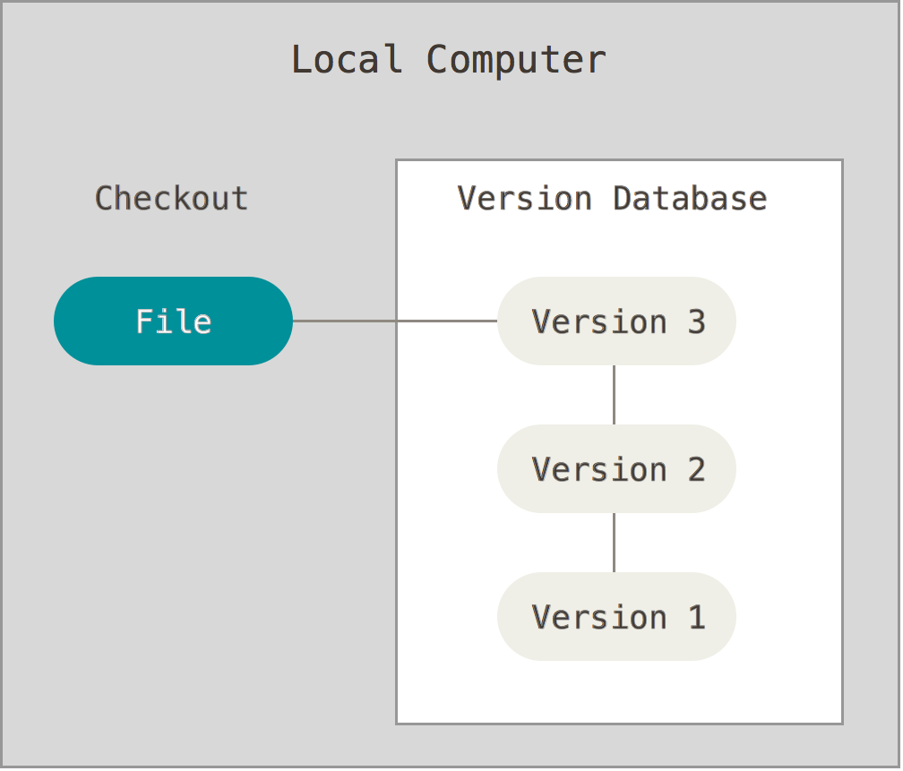

VCS demo
Version Control Systems
http://goo.gl/1tc7ohhttp://waynelkh.github.io/sa-git
Who am I?
NCTU-CSCC TA
wnlee
What is "verion control"
Version control is a system that records changes to a file or set of files over time so that you can recall specific versions later.
Without Version Control

# 2015-11-10
cp -r project project.bak
# 2015-11-11
cp -r project project.bak1
# 2015-11-12
cp -r project project.bak2
# 2015-11-15
cp -r project project.bak3
Local Version Control Systems
Centralized Version Control Systems

Distributed Version Control Systems

GIT
Distributed Version Control Systems
A Short History of Git
- Linus Torvalds (the creator of Linux)
- Source Control Management
- ~2005 BitKeeper
- 2005~ Git
Git Basic
- Snapshots, Not Differences
- Nearly Every Operation Is Local
- Git Has Integrity
- Git Generally Only Adds Data
How to install
$ pkg install git
getting started
git config --global user.email "you@example.com"
git config --global user.name "Name"
# global config in ~/.gitconfig
Getting a Git Repository
$ git init
$ git add [file]
$ git commit
The Three States

The lifecycle of the status of your files

.gitignore
# no .a files
*.a
# but do track lib.a, even though you're ignoring .a files above
!lib.a
# only ignore the TODO file in the current directory, not subdir/TODO
/TODO
# ignore all files in the build/ directory
build/
# ignore doc/notes.txt, but not doc/server/arch.txt
doc/*.txt
# ignore all .pdf files in the doc/ directory
doc/**/*.pdf
git add
Add file contents to the index
$ git add file file1...
$ git add directory
$ git add .
git rm
Add file contents to the index
$ git rm [file]
# only remove files from the index (untrack the file)
$ git rm --cached [file]
git mv
Add file contents to the index
$ git mv file_from file_to
# equivalent to
$ mv file_from file_to
$ git rm file_from
$ git add file_to
git commit
$ git commit
-a: stage all modified and deleted path
-m: use the given message as the commit message
--amend: Replace the tip of the current branch by creating a new commit
git status
$ git status -s
M README.md # updated in index
D run.sh # deleted from index
R src/main.js # renamed in index
A src/index.html # added to index
?? src/READEME.md # untracked
git log
$ git log
--all
--graph
commit 405251d689b10aba987a081589b334426968e2ac
Author: wnlee wnlee@cs.nctu.edu.tw
Date: Thu Nov 13 15:22:07 2015 +0800
Initial commit
$ git log --graph --pretty=format:'%Cred%h%Creset -%C(yellow)%d%Creset %s %Cgreen(%cr) %C(bold blue)<%an>%Creset' --abbrev-commit
$ git config --global alias.lg "log --graph --pretty=format:'%Cred%h%Creset -%C(yellow)%d%Creset %s %Cgreen(%cr) %C(bold blue)<%an>%Creset' --abbrev-commit --date=relative"
git diff
git diff [commit] [commit] [file-path]
--cached/--staged
--word-diff
Undoing Things
# Change preview commit again
$ git commit --amend
# Unstaging a Staged File
$ git reset HEAD file
# Unmodifying a Modified File
$ git checkout -- file
git branch
Branching means you diverge from the main line of development and continue to do work without messing with that main line
git branch

git branch
# List, create, or delete branches
$ git branch
$ git branch [branch_name]
$ git branch -d [branch_name]
# switch to the branch
$ git checkout [branch name]
# create branch and switch to the branch
$ git checkout -b [branch name]
git merge
merge a branch into your current branch (HEAD)
conflict
- Fast-forward
- Merge made by the 'recursive' strategy.
- Merge conflict
Merge Conflicts
- Fix Conflicts
- git add
- git commit
git rebase
Forward-port local commits to the updated upstream head
# origin
A---B---C topic (HEAD)
/
D---E---F---G master
# git rebase master
A'--B'--C' topic
/
D---E---F---G master
git rebase -i [commit]
- pick = use commit
- reword = use commit, but edit the commit message
- edit = use commit, but stop for amending
- squash = use commit, but meld into previous commit
- fixup = like "squash", but discard this commit's log message
git blame
show what revision and author last modified each line of a file
git show
Show various types of objects
git stash
Stash the changes in a dirty working directory away
git tag
Show various types of objects
git reset
Reset current HEAD to the specified state
git clone
Clone a repository into a new directory
git remote
manage set of tracked repositories
git fetch
Download objects and refs from another repository
git pull
git pull = git fetch + merge
git push
Update remote refs along with associated objects
GITHUB
Refernce
GIT Pro Man pageThe end
Q & A
Themes
Black (default) - White - League - Sky - Beige - SimpleSerif - Blood - Night - Moon - Solarized